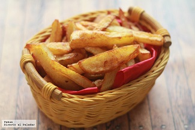
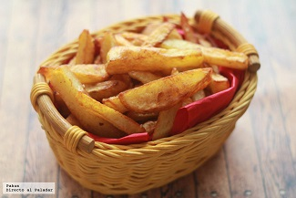

Receta de patatas fritas caseras
Ingredientes
- 3 o 4 patatas (300 g.)
- 4 dientes de ajo
- Aceite de oliva
- Sal
Elaboración (Pasos)
- Calentar aceite en una sartén
- Añadir las patatas cortas, la sal y los ajos.
- Freir al gusto.
- Servir en plato.
Receta de patatas fritas caseras
